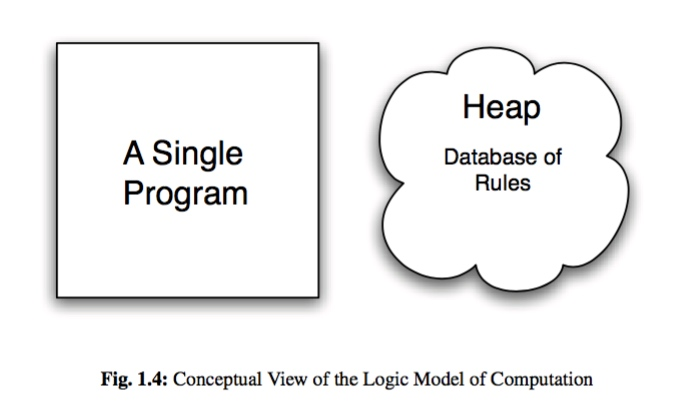
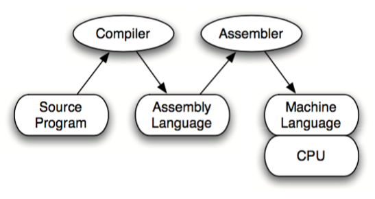
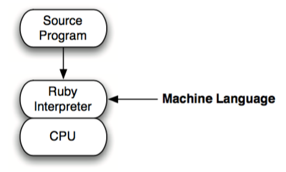
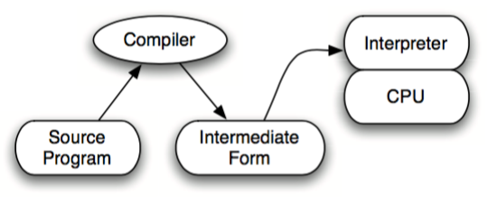

代码之髓——编程语言核心概念
学习方式
- 在比较中学习
- 在历史中学习
历史原因，最原始的计算机ENIAC使用电缆编程，之后使用纸带。FORTRAN语言是第一个大家现在普遍使用的语言类型。
为什么有编程语言？
为了便捷、高效。
语言各有各的便捷。C++重视执行速度，规则繁多。Scheme语言规则容易掌握。Python侧重代码易读。
不同的目的会使用不同的语言。语言只是工具，要根据需求选择最好的工具。
为什么要有语法规则？
- 语法是什么?语法是一种由程序设计者指定的规则。
为什么要这样规定？为了便捷。
例如，运算符的计算顺序，大部分与四则运算相同。
- 桟机器与FORTH语言：利用桟实现计算顺序。
语法树与LISP： 树形结构表达计算顺序。不同规则的语法树遍历规则不同。
在python中查看：import ast ast.dump(ast.parse("(1 + 2) * 3")) 'Module(body=[Expr(value=BinOp(left=BinOp(left=Num(n=1), op=Add(), right=Num(n=2)), op=Mult(), right=Num(n=3)))])'
要确认理解是否正确，首先要表达出来。当你不知道自己该学什么的时候，不妨想一想自己学习的目的是什么，或者从小事做起，不断的把事情做大。
源程序通过语法分析器生成语法树。（这不是一件容易的事情）
为什么有流程控制？
为什么有if语句，从C语言与汇编说起。
Programming Language
[TOC]
三种编程风格。
Introduce you to the three styles of programming languages. These styles are:
- 面向对象编程 Imperative/Object-Oriented Programming with languages like Java, C++, Ruby, Pascal, Basic, and other languages you probably have used before.
- 函数式编程 Functional Programming with languages like ML, Haskell, Lisp, Scheme, and others.
- 逻辑式编程Logic Programming with Prolog.
The goal of the text is to help you understand how to use the paradigms and models of com- putation these languages represent to solve problems.
不同的编程范式会以不同的方式解决问题。
历史角度
Models of Computation
计算的模型
The Imperative Model

The Functional Model
In the func- tional model of computation the focus is on function calls. Functions and parameter passing are the primary means of accomplishing data transformation.
The Logic Model

In the logic model the programmer doesn’t actually write a program at all. Instead, the programmer provides a database of facts or rules. From this database, a single program tries to answer questions with a yes or no answer.
The Origins of a Few Programming Languages
1.4 Language Implementation
- Interpreted - Compiled
- Hybrid Language Implementations
Interpreted

Compiled

Hybrid Language Implementations

1.5 Where do we go from here?
The Mobile Application Hacker's Book
程序是怎样跑起来的
为什么用二进制表示计算机信息？
计算机内部是由IC(集成电路)电子元部件组成的。IC的一个引脚，只能表示两种状态。用二进制表示与IC的特征相符。
字节是最基本的信息计量档位，位是最小单位。
Learning iOS UI Development [Note]
Chapter 1. UI Foundamentals
Windows
window is an instance of UIWindow. It's the root class of UI's hierarchy. One of the function of the window is to deliver touches to the underling views.
window好比是画板，view好比是画纸。
-- widow
--- rootViewController(view controller)
The content of the window
@UIApplication从info.plist中找到信息，初始化viewcontroller；App delegate中有window属性，设置之前初始化的view controller为其rootViewController。最后，执行完applicationDidFinishLaunching:withOption之后，会调用makeKeyAndVisible将界面从rootViewController中展示出来。（中文混杂英文描述好生涩）
- 将某个view controller设置为rootViewController，window就会显示该view controller的view。
- @UIApplicationMain > The @UIApplicationMain attribute in the AppDelegate.swift file is responsible for the launch of the entire application process. It marks an entry point for the application launch, reading the Storyboard's information from the info.plist file and instantiating the initial view controller
- window property in the AppDelegate. >This property will be a handy reference to the main window for the entire life cycle of the application.
代码实现：
func application(application: UIApplication, didFinishLaunchingWithOptions launchOptions: [NSObject: AnyObject]?) -> Bool { // Instantiate a window with the same size of the screen window = UIWindow(frame: UIScreen.mainScreen().bounds) // Instantiate a view controller with the Main storyboard let storyboard = UIStoryboard(name: "Main", bundle: nil) let viewController = storyboard.instantiateViewControllerWithIdentifier("viewController2") as! ViewController // Setup and present the window window?.rootViewController = viewController window?.makeKeyAndVisible() return true }
Working with views
UIView is the basic class for other UI element.
UIWindow is also the subclass of the UIVIew.
define the view's geometry
(0,0)
------------>x
|
|
|
y
// define a point
let point = CGPoint(x:20, y:10)
// define a size
let size = CGSize(width: 20, height: 10)
// define a rect using size and point
let rect_A = CGRect(origin: point, size: size)
// define a rext using x, y, width and height data
let rect_B = CGRect(x: 15, y: 10. width: 100, height: 30)
1. bounds
the view's self information.自身坐标系下。
2. frame
the place in the hierarchy.父级坐标系下。
3. center
同frame。
UI hierarchy and views inheritance
let parentVIew = view.parentview
let children = view.subview
- add
- move
delete
containerView.addSubView(childView) containerView.insertSubview(childView, atindex: 2) containerView.insertSubview(childView, aboveSubview: anotherView) containerView.insetSubview(childView,belowSubview : anotherView) remove all the subview of the view: for subview in container.subview{ subview.removeFromSuperview() } viewWithTag
View and subview visibility
clipToBuounds, the parent view define the subviews' visibility outside its boundaries.
Hierarchy events
override func didMoveToSuperview(){
// to do something
}
override func didAddSubview(){
// to do something
}
override func didMoveToWindow(){
println("I've been attached to this window hierarchy: \(window)")
}
View drawing and life cycle
- draw a view and creat snapshots for each displayed element.
setNeedsDisplay pr setNeedsDisplayInRect can make the UIView invalidated. They will redraw during the next run loop. The latter one is better(the latter performs an optimization using only a portion of the new view content).
Chapter 2. UI Components overview - UIKit
This chapter covers many different but related topics. Here is an overview of what you will read about in the next pages:
- Text elements and the keyboard
- Buttons, selectors, and user interaction
- View-based components
- A UI for structured data
- Custom components with the UIAppearance protocol
Text element: UILabel,UItextfield,UItextview
var image = UIImageView(image: UIImage(named:"Image"))
self.textView.addSubview(image)
let exclusionPath = UIBezierPath(rect: image.frame)
self.textView.textContainer.exclusionPaths = [exclusionPath]
keyboard event and apperance
Button and selectors
subclass of UIControl class
Most of the UI elements' role is to interact with the users. They convert touch event into actions or choices.
The Target-Action patten
This pattern defines how a control can request the execution of an function(action) to another object(target) in response to an event.
View-based components
subclass of UIView
- UIProgressView
- UIActivityIndicatorView
- UIImageView ,UIImage
- UIScrollView
Managing and presenting structed data
table and collection views
- UITableView(UIScrollView)
- UICollectionView
The UIApperance protocal
Example:
let minTrack = UIImage(named: "minTrack")
let maxTrack = UIImage(named: "maxTrack")
let thumb = UIImage(named: "thumb")
// Create resizable images
let resizableMinTrack =
minTrack?.resizableImageWithCapInsets(
UIEdgeInsets(top: 0, left: 5, bottom: 0, right: 5))
let resizableMaxTrack =
maxTrack?.resizableImageWithCapInsets(
UIEdgeInsets(top: 0, left: 5, bottom: 0, right: 5))
// Configure the styles!
UISlider.appearance().setMaximumTrackImage(
resizableMaxTrack, forState: UIControlState.Normal)
UISlider.appearance().setMinimumTrackImage(
resizableMinTrack, forState: UIControlState.Normal)
UISlider.appearance().setThumbImage(
thumb, forState: UIControlState.Normal)
Chapter 3. Interface Builder, XIB, and storyboard
working with the XIB files
Managing user interface with storyboard
connecting user interface with your code
可以先写代码再拖动选择。
@IBAction func signIn(sender:UIButton){
}
var storyboard = UIStoryboard(name: "Main", bundle: nil)
var storyboard = UIStoryboard(name: "Main", bundle: nil)
implementing navigateion with storyboard and segues
override func prepareForSegue(segue: UIStoryboardSegue,
sender: AnyObject?) {
if segue.identifier == "userDetails"{
let detailsVC = segue.destinationViewController as!
detailsViewController
detailsVC.firstname = user.firstname
detailsVC.lastname = user.lastname
}
}
@IBAction func <function name>(segue:UIStoryboardSegue){}
Auto Layout
The main rule we should keep in mind is that if you want to specify the frame of a view with Auto Layout, you need to give it enough information for both the X/Y position and width/height size.
UI Level
- Layout
- stack view->behaviors
- layout margins
- Apperance basicline
Xcode tips:
- Shift + right clik / control + left click
- file:option+shift
Build time
design time->xml
build time->nib
Compiling storyboard
loding storyboard at run time
- Performance: Nib file loaded on demand.
- Reuse: Nib files enable reuse.
- Life cycle.
Run time
Connection, API,
Design
- Bad App Icons Beautiful+Instandly Recongnizable
- Focus on a unique shape
- Carefully select colors
- Avoid using a photo
- Avoid a lot of text
- Be creative
- Case study
Cocoa Touch best practise
put on the background.
Creating Custom iOS User Interface
Ask some questions:
- Where will this be userd?
UIApperance
- Spring Animation
Mining the Social Web
As humans, what are some things that we want that technology might help us to get?
• We want to be heard.
• We want to satisfy our curiosity.
• We want it easy.
• We want it now.
Why?
- Fun
- Frame
- Share
This is a strong point:
We have a deeply rooted need to share our ideas and experiences, which gives us the ability to connect with other people, to be heard, and to feel a sense of worth and importance. We are curious about the world around us and how to organize and manipulate it, and we use communication to share our observations, ask questions, and engage with other people in meaningful dialogues about our quandaries.
The relationship model is different.
What kind of question are you going to ask?
What kind of problem are you going to slove?
Website: